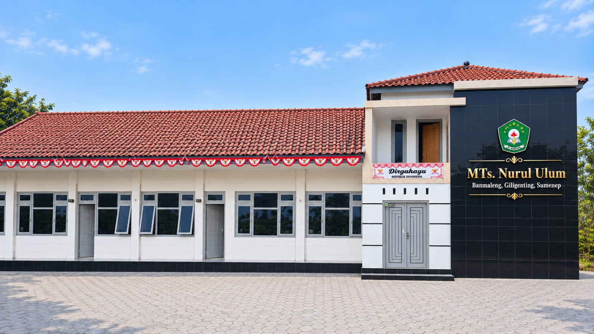
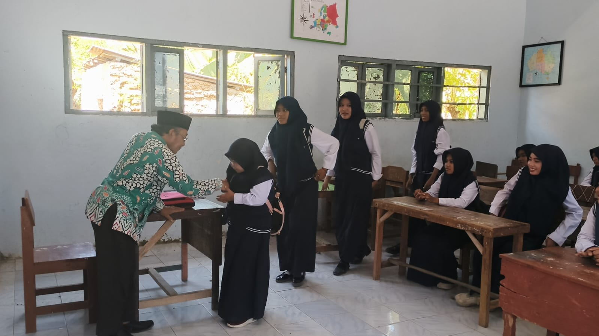
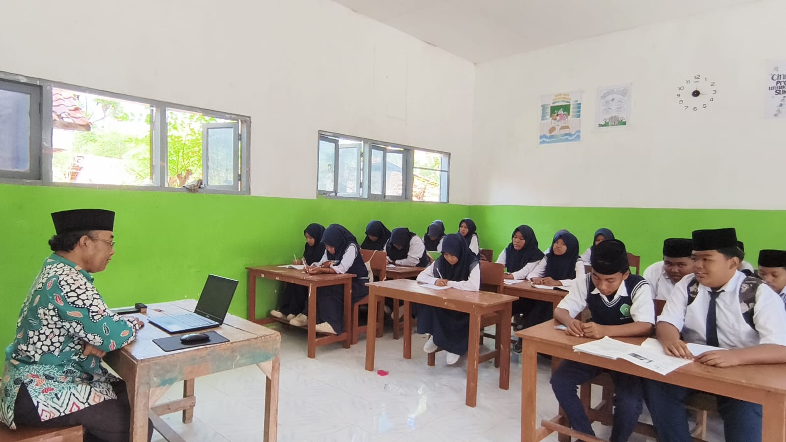
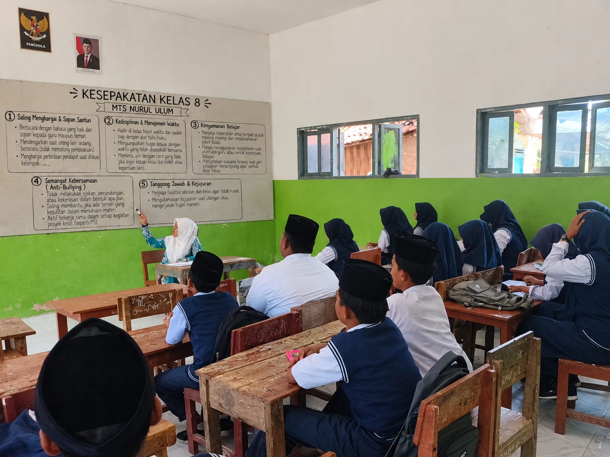
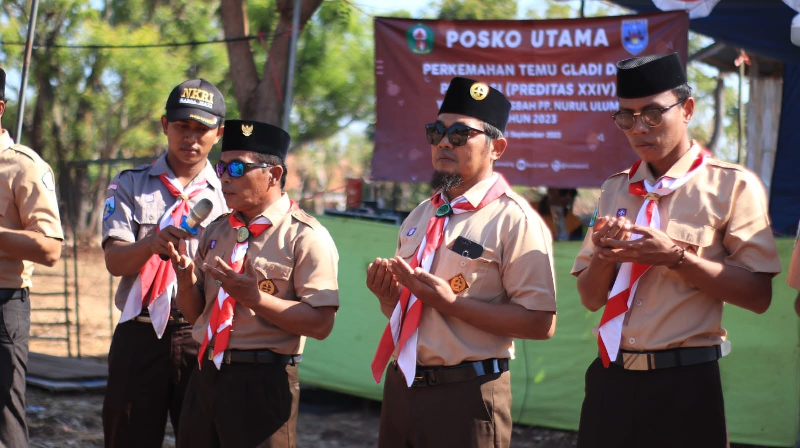
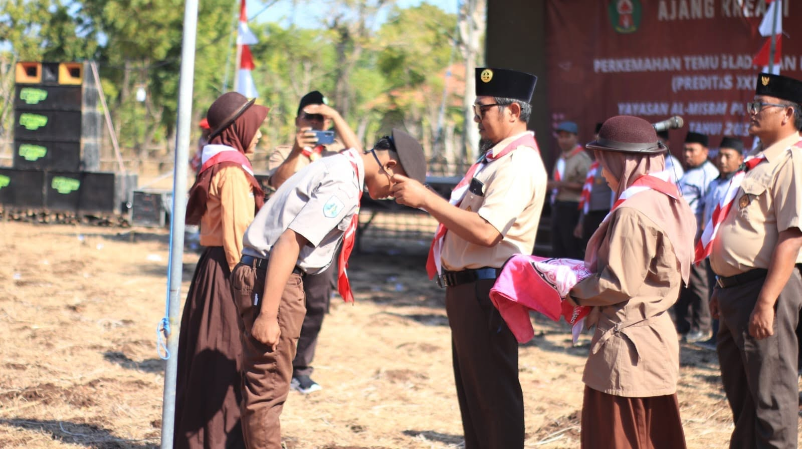
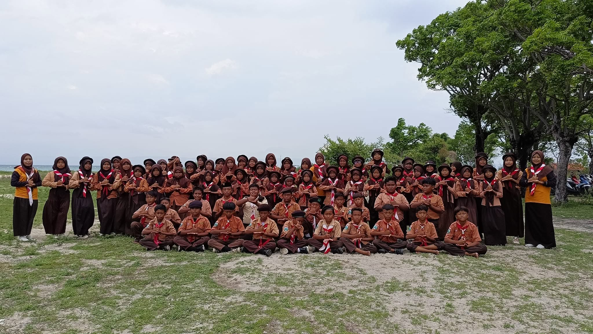

Organisasi Santri & Alumni
Nurul Ulum
Wadah persatuan, pemberdayaan, dan silaturahmi bagi seluruh santri aktif dan alumni di lingkungan Pondok Pesantren Nurul Ulum.
IKSANU
Ikatan Santri & Alumni Nurul Ulum
IKSANU (Ikatan Santri & Alumni Nurul Ulum) adalah wadah persatuan dan silaturahmi bagi seluruh santri aktif dan alumni Pondok Pesantren Nurul Ulum. Organisasi ini hadir untuk mempererat ukhuwah Islamiyah antar generasi, menjaga identitas keilmuan pesantren, serta berkontribusi dalam pengembangan lembaga pesantren yang lebih baik.
IKSANU menjalankan berbagai program seperti halaqah alumni, bakti sosial, reuni tahunan, dan pengembangan jaringan alumni di berbagai daerah. Bersama IKSANU, para alumni tetap terhubung dengan akar keilmuan dan nilai-nilai pesantren yang telah membentuk karakter mereka.

🤝 Halaqah Alumni
🌟 Reuni TahunanOSIM MTs Nurul Ulum
Organisasi Siswa Intra Madrasah Tsanawiyah
OSIM MTs (Organisasi Siswa Intra Madrasah) adalah organisasi resmi internal yang mewadahi seluruh aspirasi, kreativitas, dan kegiatan kesiswaan di tingkat Madrasah Tsanawiyah Nurul Ulum. OSIM berfungsi sebagai jembatan komunikasi antara siswa dengan pihak madrasah sekaligus menjadi laboratorium kepemimpinan bagi para santri MTs.
OSIM MTs aktif menyelenggarakan berbagai kegiatan: olimpiade sains, festival seni, kegiatan PHBI (Peringatan Hari Besar Islam), olahraga santri, dan program pengembangan potensi siswa lainnya. Melalui OSIM, santri belajar mengelola organisasi, mengambil keputusan bersama, dan bertanggung jawab atas program yang mereka rancang.

🏛️ Sidang OSIM MTs
🎓 Kegiatan SiswaOSIM MA Nurul Ulum
Organisasi Siswa Intra Madrasah Aliyah
OSIM MA (Organisasi Siswa Intra Madrasah) adalah organisasi internal resmi yang menaungi seluruh kegiatan dan aspirasi siswa di tingkat Madrasah Aliyah Nurul Ulum. Sebagai organisasi tertinggi di tingkat MA, OSIM MA mendorong pengembangan potensi kepemimpinan, kreativitas seni budaya Islam, dan pemberdayaan seluruh warga madrasah.
OSIM MA mengkoordinasikan berbagai kegiatan lintas bidang: PHBI, festival seni santri, olimpiade, perlombaan antarmadrasah, hingga program pengabdian masyarakat. OSIM MA menjadi tempat para santri MA berlatih menjadi pemimpin yang visioner dan bertanggung jawab.
Pramuka Pangkalan Nurul Ulum
Gugus Depan Pramuka Pondok Pesantren Nurul Ulum
Pramuka Pangkalan Nurul Ulum adalah gugus depan pramuka yang aktif membina karakter, kedisiplinan, dan jiwa kepemimpinan para santri. Berpedoman pada Tri Satya dan Dasa Dharma Pramuka, organisasi ini mengintegrasikan nilai kepramukaan dengan semangat keislaman pesantren.
Melalui kegiatan seperti kemah pramuka, lomba tingkat, latihan PBB (Peraturan Baris-Berbaris), keterampilan tali-temali, pertolongan pertama, dan bakti sosial, Pramuka Pangkalan membentuk generasi santri yang tangguh, mandiri, disiplin, dan cinta tanah air. Gugus depan ini juga aktif berprestasi di tingkat kabupaten, provinsi, dan nasional.

🏕️ Kemah Pramuka
🪢 Latihan Keterampilan
📸 Tambahkan Foto Kegiatan